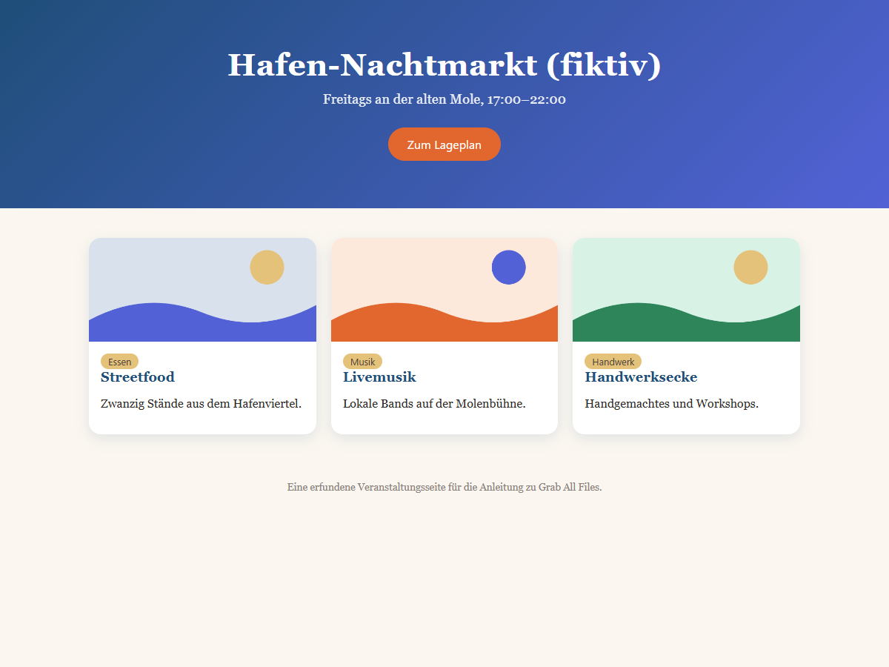

Echte Ausgabe von Grab All Files
Eine Seite mit ihrem ursprünglichen Design als HTML gespeichert (Kostenlos)
Eine fiktive Veranstaltungsseite mit Farben und Kartenlayout, gespeichert als eine HTML-Datei, die das ursprüngliche Aussehen behält. Die Bilder liegen in der Datei, sie wird also auch offline angezeigt. Wie genau eine Seite nachgebildet wird, hängt davon ab, wie die Seite aufgebaut ist.
Ausgabedateien
Nebeneinander bei gleicher Fensterbreite

So ist sie entstanden
- Quellseite
- /samples/source/de/night-market/
- Erweiterung
- Grab All Files 5.8.31
- Browser
- Chrome 156.0.8078.48 (Windows 11)
- Tarif
- Kostenlos
- Erstellt am
- 2026-10-28
- Einstellungen
- Seiten: Nur aktuelle Seite
- Darstellung: Ursprüngliches Aussehen behalten
- Bilder: Offline-Speicherung (Standard)